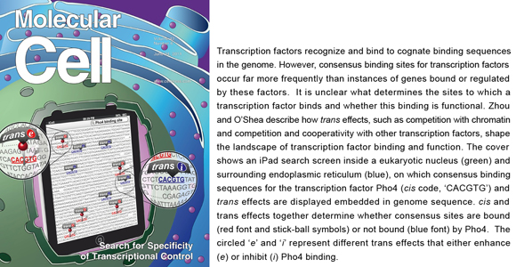

News Archives : 2011 : CisCode, Trans Effect, Transcription Specificity
by Erin O'Shea and Xu Zhou
June 27, 2011
Gene expression is controlled by a class of proteins called transcription factors. These proteins usually bind to short 6-8 base pair DNA sequences in the regulatory regions (promoters) of genes. It is thought that such DNA binding sequences constitute a set of cis codes that help determine which genes are turned on by a given transcription factor.
A simple problem emerges as we examine whether cis codes contain sufficient information to dictate a specific expression program: assuming a transcription factor recognizes a 6 base pair DNA sequence, it can find a perfectly matched binding site every 46 = 4096 bases in a randomized genome – this means that the factor could bind to one of every five genes in the budding yeast genome (yeast promoters are ~800 base pairs in length) and likely most genes in a complex eukaryotic genome if the promoters extend to tens of kilobases. How can transcription factors identify their targets of regulation given the poor specificity of their DNA binding sequences?
We used the phosphate-responsive (PHO) signaling pathway in the budding yeast S. cerevisiae as a model system to explore the determinants of transcription factor binding and function at genome scale. Pho4, a basic-helix-loop-helix (bHLH) transcriptional activator, is activated in response to phosphate starvation and binds with high affinity to DNA sequence ‘CACGTG’. There are over 800 ‘CACGTG’ sequences in the yeast genome, but Pho4 binds to only 14% of these sites and only a quarter of these binding events appear to activate gene activation.
We found two major trans effects that determine where Pho4 binds in the genome: chromatin (nucleosomes) strongly restricts Pho4 binding; competition from Cbf1, another transcription factor that also recognizes the ‘CACGTG’ motif, determines Pho4 binding occupancy when the site is not occupied by nucleosomes. The competition from Cbf1 represses unnecessary gene induction by Pho4 when phosphate is abundant, and helps to define which genes are in the phosphate regulon when phosphate is limited and the PHO pathway is turned on. For the sites that are bound by Pho4, the activation outcome is dictated by a cooperative interaction between Pho4 and Pho2, another transcription factor implicated in the PHO pathway. With these observations, we are able to predict the global binding and regulation pattern of Pho4 with high accuracy.
We demonstrated that competition and cooperativity determine the genome wide binding and regulatory landscape of transcription factor Pho4 in the unicellular organism budding yeast. In more complex eukaryotic cells, hundreds of transcription factors can bind to very similar DNA sequences and regulate diverse transcriptional responses. How do these transcription factors select their target genes to regulate? How is gene regulation influenced by the interplay among these transcription factors? Further, is the alteration of these trans influences involved in human diseases that result from misregulation by several key transcription factors?
Read more in Molecular Cell
[June 27th, 2011]
